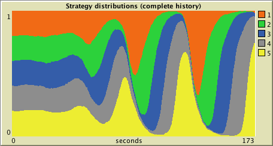
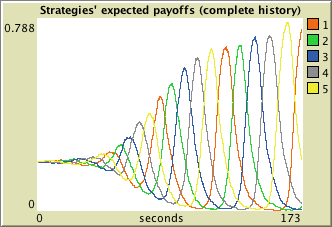

Agent-Based Evolutionary Dynamics
Abed is a modeling framework designed to simulate the evolution of a population of agents who play a symmetric 2-player game and, from time to time, are given the opportunity to revise their strategy
How to install Abed
To use Abed, you will have to install NetLogo (free and open source) 6.0.1 or higher and download this zip file. The zip file contains the model itself (abed.nlogo) and also this very webpage (which contains a description of the model). To run the model, you just have to click on the file abed.nlogo. The figure below shows Abed's interface.

Overview
We use bold green fonts to denote
Abed is a modeling framework designed to simulate the evolution of a population of
The simulation runs in discrete time-steps called ticks. Within each tick:
- The set of revising agents is chosen
- The game is played by the revising agents and all the agents involved in their revision
- The revising agents simultaneously update their strategies
This sequence of events, which is explained below in detail, is repetead iteratively.
Selection of revising agents
All agents are equally likely to revise their strategy in every tick. There are two ways in which the set of revising agents can be chosen:
- By setting parameter
prob-revision , which is the probability that each individual agent revises his strategy in every tick. - By setting parameter
n-of-revisions-per-tick , which is the number of randomly selected agents that will revise their strategy in every tick.
Computation of payoffs
The payoff that each agent obtains in each tick is computed as the average payoff over
Specifying how payoffs are computed
There are parameters to specify:
- the
n-of-trials agents make, - whether these are conducted with or without replacement (
trials-with-replacement? ), and - whether agents may play with themselves or not (
self-matching? ).
Strategy revision
Agents are occasionally given the opportunity to revise their strategy. The specific protocol used by revising agents is determined by two parameters:
-
candidate-selection , which indicates whether the protocol isimitative ordirect (PGED, p. 9), and -
decision-method , which can bebest ,logit , orproportional .
We briefly explain the meaning of each of these terms below.
Imitative Protocols
Under
Imitative protocols: Specifying how to compile the set of potential imitatees
There are parameters to specify:
- the number of agents that revising agents will consider imitating (
n-to-consider-imitating ) , - whether these are selected with or without replacement (
imitatees-with-replacement? ), and - whether agents may imitate themselves or not (
consider-imitating-self? ).
Direct Protocols
Direct protocols: Specifying how to test strategies
There are parameters to specify:
- the number of strategies that revising agents consider, including their current strategy (
n-in-test-set ), - whether the strategies in the test-set are compared according to a payoff computed using one single sample of agents (i.e. the same set of agents for every strategy), or whether the payoff of each strategy in the test-set is computed using a freshly drawn random sample of agents (
single-sample? ).
Decision methods
A
- one particular agent out of a set of candidates, whose strategy will be adopted by the revising agent (in
imitative protocols), or - one particular strategy out of a set of candidate strategies, which will be adopted by the revising agent (in
direct protocols).
The selection is based on the payoff obtained by each of the candidates (agents or strategies) in the input set. In
-
best : The candidate with the highest payoff is selected. Ties are resolved according to the procedure indicated with parametertie-breaker . -
logit : A random weighted choice is conducted among the candidates. The weight for each candidate is e(payoff /eta ). -
proportional : In this method the set of candidates contains two elements only: the one corresponding to the revising agent's own strategy (or to himself inimitative protocols) and another one. Then, the revising agent adopts the other candidate's strategy only if the other candidate's payoff is higher than his own, and he does so with probability proportional to the payoff difference.
Parameters
Parameters to set up the population and its initial strategy distribution
- If
random-initial-condition? isOn , the population will consist ofn-of-agents agents, each of them with a random initial strategy. - If
random-initial-condition? isOff , the population will be created from the list given asinitial-condition . Let this list be [x1 x2 ... xn]; then the initial population will consist of x1 agents playing strategy 1, x2 agents playing strategy 2, ... , and xn agents playing strategy n. The value ofn-of-agents is then set to the total number of agents in the population.
Parameters that determine when agents revise their strategy
- If
use-prob-revision? isOn , each individual agent revises his strategy with probabilityprob-revision in every tick. - If
use-prob-revision? isOff , thenn-of-revisions-per-tick agents are randomly selected to revise their strategy in every tick.
The value of these three parameters can be changed at runtime with immediate effect on the model.
Parameters that determine how payoffs are calculated
This flowchart is a summary of all the parameters that determine how payoffs are calculated.
The idea is to start at the top of the flowchart, give a value to every parameter you encounter on your way and, at the decision nodes (i.e. the red diamonds), select the exit arrow whose [label] indicates the value of the parameter you have just chosen. Thus, note that, depending on your choices, it may not be necessary to set the value of all parameters.
Every parameter is explained below

Payoff matrix for the symmetric game. Entry Aij in the matrix denotes the payoff obtained by player row when he chooses strategy i and his counterpart uses strategy j. The number of strategies is assumed to be the number of rows (and columns) in this square matrix.
- If
self-matching? isOn , agents can be matched with themselves. - If
self-matching? isOff , agents cannot be matched with themselves.
If
- Everyone, including themselves, if
self-matching? isOn . - Everyone else, if
self-matching? isOff .
If
Parameter
Parameter
We assume clever payoff evaluation (see PGED, section 11.4.2, pp. 419-421), i.e. when a revising agent tests a strategy s different from his current strategy, he assumes that he switches to this strategy s (so the population state changes), and then he computes the payoff he would get in this new state (i.e. he computes the actual payoff he would get if only he changed his strategy).
Parameters that determine how agents revise their strategy
With probability
The idea is to start at the top of the flowchart, give a value to every parameter you encounter on your way and, at the decision nodes (i.e. the red diamonds), select the exit arrow whose [label] indicates the value of the parameter you have just chosen. Every parameter is explained below.
Parameter
The set of candidate agents always contains the revising agent. The following diagram shows the different parameters that determine how the set of candidate agents is compiled. We use Sample(n, p, R) to denote a sample of
n =
The white boxes in the figure below show the sets of candidates for each parameter setting

The set of candidate strategies contains the revising agent's own strategy plus (
Parameter
The user can set the value of this parameter only if
Parameter
Specifically, the chosen
The candidate with the highest payoff is returned. Ties are resolved using the selected
-
stick-uniform : If the current strategy of the revising agent is in the tie, the revising agent sticks to it. Otherwise, a random choice is made using the uniform distribution. -
stick-min : If the current strategy of the revising agent is in the tie, the revising agent sticks to it. Otherwise, the strategy with the minimum number is selected. -
uniform : A random choice is made using the uniform distribution. -
min : The strategy with the minimum number is selected. -
random-walk : This tie-breaker makes use of an auxiliary random walk that is running in the background. Let N be the number of agents in Abed and let n be the number of strategies. In the auxiliary random walk, there are N rw-agents, plus a set of n so-called committed rw-agents, one for each of the n strategies in Abed. The committed rw-agents never change strategy. In each iteration of this random walk, one uncommitted rw-agent is selected at random to imitate another (committed or uncommitted) rw-agent, also chosen at random. We run floor(N ×random-walk-speed ) iterations of this process per tick. When there is a tie in Abed, the relative frequency of each strategy in the auxiliary random walk is used as a weight to make a random weighted selection among the tied candidates.
A random weighted choice is conducted among the tied candidates. The weight for each candidate is e(payoff /
In
- If
candidate-selection =imitative , the value ofn-to-consider-imitating is automatically set to 1. -
If
candidate-selection =direct , the value ofn-in-test-set is automatically set to 2.
Let candidate denote the other agent or strategy. Then, the revising agent will consider adopting the candidate's strategy only if the candidate's payoff is higher than his own, and he will actually adopt it with probability proportional to the payoff difference. In order to turn the difference in payoffs into a meaningful probability, we divide the payoff difference by the maximum possible payoff difference that could occur in the game.
How to save and load parameter files
Clicking on the button labeled , a window pops up to allow the user to save all parameter values in a .csv file.
Clicking on the button labeled , a window pops up to allow the user to load a parameter file in the same format as it is saved by Abed.
How to use it
Running the model
Once the model is parameterized (see Parameters section), click on the button labeled to initialize everything. Then, click on to run the model indefinitely (until you click on again). A click on runs the model one tick only.
The value of all parameters can be changed at runtime with immediate effect on the model
Plots and monitors
All plots in Abed show units of time in the horizontal axis. These are called seconds and milliseconds for simplicity, but they could be called in any other way. One second is defined as the number of ticks over which the expected number of revisions equals the total number of agents. This number of ticks per second is called
and is shown in a monitor. The other monitor in Abed shows the
that have been executed. Plots are updated every
There are two plots to show the strategy distribution in the population of agents as ticks go by, like the one below:

and two other plots to show the expected payoff of each strategy as ticks go by, like the one below:

Each of the two types of plots described above comes in two different flavors: one that shows the data from the beginning of the simulation (labeled complete history and active if
License
Abed (Agent-Based Evolutionary Dynamics) is a modeling framework designed to simulate the evolution of a population of agents who play a symmetric 2-player game and, from time to time, are given the opportunity to revise their strategy.
Copyright (C) 2016 Luis R. Izquierdo, Segismundo S. Izquierdo & Bill Sandholm
This program is free software; you can redistribute it and/or modify it under the terms of the GNU General Public License as published by the Free Software Foundation; either version 3 of the License, or (at your option) any later version.
This program is distributed in the hope that it will be useful, but WITHOUT ANY WARRANTY; without even the implied warranty of MERCHANTABILITY or FITNESS FOR A PARTICULAR PURPOSE. See the GNU General Public License for more details.
You can download a copy of the GNU General Public License by clicking here; you can also get a printed copy writing to the Free Software Foundation, Inc., 51 Franklin Street, Fifth Floor, Boston, MA 02110-1301, USA.
Contact information:
Luis R. Izquierdo
University of Burgos, Spain.
e-mail: lrizquierdo@ubu.es
References
Sandholm, W. H. (2010). Population Games and Evolutionary Dynamics. MIT Press, Cambridge.